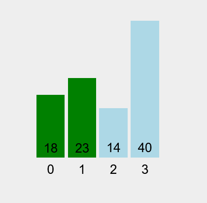
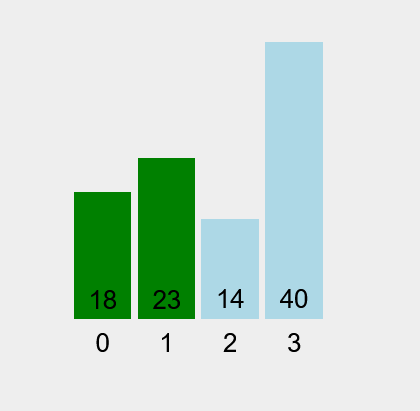
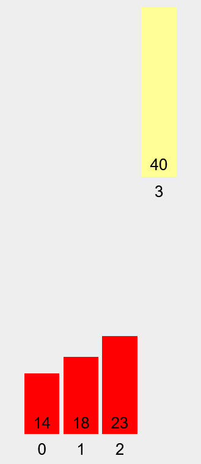
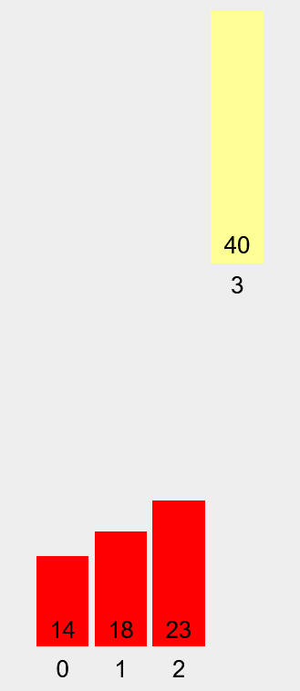
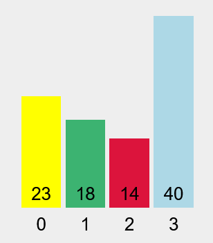
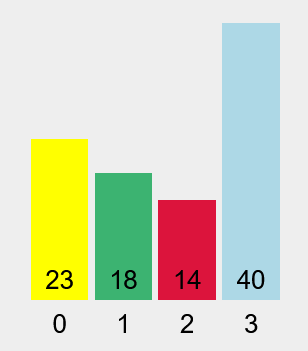

아이유
2024
알고리즘은 특정 작업 또는 문제를 해결하는 데 사용되는 잘 정의되고 단계별 계산 절차입니다. 알고리즘은 일부 값 또는 값 집합을 입력으로 받아 일부 값 또는 값 집합을 출력으로 생성합니다. 다른 한편으로 알고리즘은 명확하게 지정된 계산 문제를 해결하기 위한 도구이기도 합니다. 이 에세이는 특히 정렬 알고리즘에 중점을 둡니다.
이론적으로 시간 복잡도는 알고리즘을 완료하는 데 필요한 시간량을 추정하는 계산 복잡도입니다. 복잡성은 프로그램이 실행할 수 있는 최대 작업 수로 볼 수 있습니다. 덧셈, 뺄셈, 곱셈 및 할당과 같은 표현식은 무시하거나 계산하지 않을 수 있습니다. 시간 복잡도에는 세 가지 유형이 있습니다. 최악의 시간 또는 최악의 시나리오에 대한 빅 오 표기법, 평균 시간을 나타내는 빅 세타(Θ), 그리고 최적의 시간 또는 최상의 시나리오를 나타내는 빅 오메가(Ω)가 있습니다. 가장 많이 사용되는 것은 빅 오 표기법입니다. 빅-오 표기법을 사용하는 이유는 프로그래밍 언어 구현, 컴파일러 또는 인터프리터, 메모리 속도, 운영 체제, 컴퓨터에서 실행되는 다른 프로세스 등과 같은 많은 요소가 있기 때문입니다. 따라서 정확한 물리적 실행 시간을 제공하는 것은 의미가 없습니다.
일반적으로 프로그래밍 언어 구현, 컴파일러 또는 인터프리터, 메모리 속도, 운영 체제, 컴퓨터에서 실행되는 다른 프로세스와 같이 알고리즘 실행 시간에 영향을 줄 수 있는 요인이 많기 때문에 알고리즘의 정확한 실행 시간을 계산하기는 어렵습니다. 그러나 시간 복잡성의 도움으로 알고리즘의 실행 시간 추정치를 계산할 수 있습니다. 데이터가 계속 증가함에 따라 훌륭하고 효율적인 알고리즘을 설계하는 능력이 점점 더 중요해지고 있습니다.
더 작은 데이터 세트에서 O(n²)와 O(n)의 차이는 미미할 수 있습니다. 그러나 더 큰 데이터 세트에서는 차이가 중요해집니다. 더 나은 알고리즘 시간 복잡성을 사용하면 큰 데이터 세트를 보다 효율적으로 처리할 수 있습니다. 비효율적인 알고리즘으로 수백만 또는 수십억 개의 데이터를 처리하는 데는 며칠 또는 몇 년 또는 영원히 걸릴 수 있습니다. 어떤 컴퓨터 사양에서든 효율적인 알고리즘은 고급 컴퓨터의 비효율적인 알고리즘보다 성능이 뛰어납니다.
버블 정렬은 가장 간단한 정렬 알고리즘으로, 잘못된 순서로 되어 있으면 인접 요소를 반복적으로 교환하여 작동합니다. 이 알고리즘은 느리고 매우 비효율적이며 2차 시간 복잡성 또는 O(n²)을 가집니다.
버블 정렬 알고리즘의 의사 코드는 다음과 같습니다.
Bubble-sort(A, n)
for i = 1 to n-1
for j = n to i+1
if A[j] < A[j - 1]
swap A[j] with A[j – 1]
임의 순서의 작은 데이터 세트입니다.
첫 번째 단계: 확인 및 교환.
두 번째 단계: 추가 확인 및 교환.
 

세 번째 단계: 추가 확인이지만 교환은 없습니다. 40이 올바른 위치에 있습니다.


네 번째 단계: 추가 확인 및 교환 후 알고리즘이 완료되었습니다.


병합 정렬은 분할 및 정복 접근 방식을 사용하는 정렬 알고리즘입니다. 입력 배열을 더 작은 하위 배열로 재귀적으로 나누고, 해당 하위 배열을 정렬한 다음 다시 병합하여 정렬된 배열을 얻는 방식으로 작동합니다. 이 알고리즘은 평균 시간 복잡도가 O(n log n)으로 비교적 빠릅니다.
정렬된 하위 배열을 배열로 병합합니다.
병합 정렬 알고리즘의 의사 코드는 다음과 같습니다.
Merge-sort(A,p,r)
if p>= r
return
q = [(p+r)/2]
Merge-sort(A,p,q)
Merge-sort(A,q+1,r)
Merge(A,p,q,r)
Merge(A,p,q,r)
n1=q-p+1
n2=r-q
let L[n1 – 1] and R[n2 – 1]
for I = 0 to n1 – 1
L[i] = A[p + i]
for j = 0 to n2 – 1
R[j] = A[q + j + 1]
i=0
j=0
k=p
while i<"n1" and j<"n2"
if L[i] <= R[j]
A[k] = L[i]
I = i+1
else A[k] = R[j]
j = j+1
k = k+1
while i < n1
A[k] = L[i]
I=i+1
K=k+1
while j < n2
A[k] = R[j]
j = j+1
k = k+1
병합 정렬의 시각화입니다. 작성자는 버블 정렬과 같은 방식으로 시각화를 하려고 했지만 두려웠습니다.
버블 정렬 시각화에 사용된 예와 동일한 배열입니다.

첫 번째 단계: 배열을 두 부분으로 나눕니다.
두 번째 단계: 배열을 더 분할합니다. 배열의 길이가 1이 될 때까지 분할할 수 있습니다.

세 번째 단계: 23이 18보다 크므로 18을 취합니다.

네 번째 단계: 오른쪽 파티션이 비어 있으므로 23을 취합니다.
다섯 번째 단계: 새 배열에서 원래 배열로 요소를 복사합니다.
여섯 번째 단계: 오른쪽 파티션에 대해 1단계부터 5단계까지와 동일한 작업을 수행합니다.

 

일곱 번째 단계: 병합합니다.
여덟 번째 단계: 새 배열에서 원래 배열로 요소를 복사합니다. 배열이 정렬되었습니다.
퀵 정렬은 병합 정렬과 마찬가지로 분할 및 정복 알고리즘입니다. 요소 하나를 피벗으로 선택하고 하위 배열에서 피벗을 올바른 위치에 배치하여 피벗을 중심으로 지정된 배열을 분할합니다. 평균 시간 복잡도는 O(n log n)이지만 최악의 시간 복잡도는 이차 시간 복잡도 또는 O(n²)입니다. 퀵 정렬 알고리즘의 장점은 대규모 데이터 세트에서 효율적이고 이 알고리즘이 분할 및 정복 알고리즘이므로 문제를 더 쉽게 해결할 수 있다는 것입니다.
퀵 정렬 알고리즘의 의사 코드는 다음과 같습니다.
Quick-sort (A,p,r)
if p <"r"
q = Partition(A,p,r)
Quick-sort (A,p,q-1)
Quick-sort(A,q+1,r)
Partition (A,p,r)
x = A[r]
i=p-1
for j = ptor – 1
if A[j] <= x
i=i+1
swap A[i] with A[j]
swap A[i+1] with A[r]
return i+1
버블 정렬 및 병합 정렬 시각화에 사용된 예와 동일한 배열입니다.
 

첫 번째 단계: 인덱스 0을 피벗으로 설정하고 인덱스 1과 인덱스 2와 비교합니다.


두 번째 단계: 인덱스 0이 인덱스 3보다 큰지 확인하고 반복을 완료합니다. 피벗은 인덱스 3 뒤에 있고 피벗은 정렬된 위치에 있습니다.

세 번째 단계: 피벗을 인덱스 0으로 설정하고 2단계와 같은 방식으로 다른 요소와 비교합니다.

네 번째 단계: 배열이 정렬되었습니다.
테스트는 C++와 Java의 두 가지 언어로 수행됩니다. 두 코드 모두 비슷하며 공정성을 보장하고 불필요한 성능 저하를 최소화하기 위해 필요한 라이브러리 또는 헤더 파일만 사용하고 타사 라이브러리 또는 헤더 파일을 사용하지 않습니다. C++ 코드에서는 데이터 세트가 벡터로 표현되고 Java에서는 데이터 세트가 ArrayList로 표현됩니다.
타이머의 경우 C++는 chrono 헤더 파일에서 찾을 수 있는 high_resolution_clock를 사용하고 Java는 System.nanoTime()을 사용합니다. 모든 테스트는 단일 코어에서 수행되며 테스트는 CPU 클럭 속도에만 의존하며 다중 스레딩은 수행되지 않습니다. 노트북의 경우 최적의 성능을 보장하기 위해 전원 브릭이 연결되면 테스트가 수행됩니다.
세 가지 데이터 세트가 있습니다. 그다지 크지 않은 데이터에 대한 작은 크기의 데이터 세트에는 200개의 요소가 있습니다. 중간 크기의 데이터 세트에는 20,000개의 요소가 있습니다. 그리고 큰 크기의 데이터 세트인 large는 중간 크기보다 약간 더 크며 200,000개의 요소가 있습니다. 각 데이터 세트는 1에서 1,000,000,000 사이의 값을 갖는 무작위로 생성된 정수입니다. 세트는 순차적이지 않습니다.
| 번호 | 호스트 이름/유형 | 호스트 사양 | C++ 컴파일러 정보 | JDK 정보 |
|---|---|---|---|---|
| 1 | 嘉强/노트북 | 5Ghz CPU 8GB DDR5 SSD Windows 11 | g++ 13.2.0 | OpenJDK 21 |
| 2 | 嘉强/서버 (Google Cloud Shell) | 2.2Ghz CPU 16GB 지정되지 않은 SSD Ubuntu 22.04 kernel 6.1 | g++ 11.4.0 | OpenJDK 17 |
| 3 | ||||
| 4 | Virtualbox(Mac OS Mojave) | 4.0GHz, 5GB 1600Mhz | Apple LLVM 10 | Java 8 |
| 5 | Virtualbox(Arch linux) | 4.0Ghz, 5GB 5600Mhz | g++ 14.2 | Java 8 |
[C++ 테스트 결과 차트]

[Java 테스트 결과 차트]
| 알고리즘 | C++ | Java | ||||
|---|---|---|---|---|---|---|
| 실행 1 (200) | 실행 2 (20,000) | 실행 3 (200,000) | 실행 1 (200) | 실행 2 (20,000) | 실행 3 (200,000) | |
| 버블 정렬 | 0.219 | 2269.784 | 143.534 | 6.189 | 1968.862 | 202042.468 |
| 병합 정렬 | 0.115 | 11.337 | 52.205 | 0.784 | 34.748 | 70.006 |
| 퀵 정렬 | 0.026 | 5.186 | 143.534 | 0.473 | 20.302 | 68.986 |
모든 결과에서 결과는 명백하고 예상됩니다. 버블 정렬은 작은, 중간 또는 큰 데이터 세트에서든 병합 정렬과 퀵 정렬 중 가장 느립니다. 퀵 정렬은 버블 정렬보다 약 4,000배 빠르고 병합 정렬보다 2.74배 빠릅니다. 병합 정렬은 버블 정렬보다 1300배 빠릅니다.
퀵 정렬은 최악의 경우 O(n²)이지만 테스트 결과에서는 테스트 전체에서 약점을 보여주지 않았습니다. 병합 정렬보다 성능이 뛰어납니다. 그러나 이상적인 피벗을 선택하는 것은 까다로울 수 있습니다. 100% 정확한 피벗을 항상 선택하는 것은 불가능합니다.
프로그래밍 언어에 관계없이 병합 정렬과 퀵 정렬은 버블 정렬에 비해 항상 우수합니다. CPU 클럭 속도는 알고리즘을 실행하는 운영 체제에 관계없이 항상 100%입니다. 클럭 속도는 Windows의 작업 관리자, Linux의 htop 및 mac OS의 활동 관리자에서 모니터링됩니다. 이는 테스트 전반에 걸쳐 CPU가 완전히 활용되었음을 나타냅니다.
테스트 결과 알고리즘 선택은 특히 대규모 데이터 세트에서 성능을 결정하는 데 중요한 역할을 한다는 결론이 나왔습니다. 효율적인 알고리즘을 실행하는 느린 컴퓨터는 비효율적인 알고리즘을 실행하는 빠른 컴퓨터보다 성능이 뛰어납니다. 퀵 정렬은 버블 정렬보다 약 4,000배 빠르고 병합 정렬보다 약 2.74배 빠릅니다. 퀵 정렬은 여기서 분명히 승자입니다.
현대 사회에서 데이터는 대규모로 증가하고 있으며 효율적인 알고리즘을 선택하는 것은 합리적인 시간 내에 대규모 데이터 세트를 처리하고 분석하는 데 매우 중요합니다. 약간의 비효율성으로 인해 비용 증가, 시간 소요 증가 등과 같은 불이익이 발생할 수 있습니다. 알고리즘 선택은 현대 데이터 시스템의 복잡성을 효과적으로 처리하는 능력에 영향을 미칩니다.
Demaine, E., Ku, J. 및 Solomon, J. (2020) 6.006 알고리즘 소개, 강의 1: 알고리즘 소개: 전기 공학 및 컴퓨터 과학, MIT OpenCourseWare. 다음에서 볼 수 있습니다. https://ocw.mit.edu/courses/6-006-introduction-to-algorithms-spring-2020/resources/mit6_006s20_r01/ (액세스 날짜: 2024년 9월 3일).
Gregg, C. 및 Zelenski, J. (2020) 강의 5/15: 정렬, CS106B 정렬. 다음에서 볼 수 있습니다. https://web.stanford.edu/class/archive/cs/cs106b/cs106b.1206/lectures/sorting/ (액세스 날짜: 2024년 9월 17일).